Ongoing work at MIT and with collaborators, and published projects from my PhD at the University of Toronto. For how they lead to
the four projects of my planned lab, see my research vision.
Work in progress at MIT and with collaborators. Results here are unpublished; status is noted for each project.
My toolpath planner: blisk surfaces coloured by alloy (IN718, Monel K-500, INCOLOY 909) beneath the DED nozzle.
MIT · DARPA METALS programToward Project 1.2
Functionally graded gas-turbine blisk
A blisk (bladed disk) needs different properties in different places: strength and fatigue resistance at the bore,
different performance at the rim and blades. With Prof. Zachary Cordero, I am designing, fabricating and testing a
component-level blisk whose alloy changes radially (IN718 → INCOLOY 909 → Monel K-500), built by multi-material DED.
Built a planner that co-optimizes the toolpath and the composition for the whole blisk, accounting for dilution between tracks and heat build-up.
Groundwork for Project 1.2, composition-aware toolpath planning, whose first target is a blisk graded from a fatigue-resistant bore to creep-resistant blades.
AI: bilevel optimization
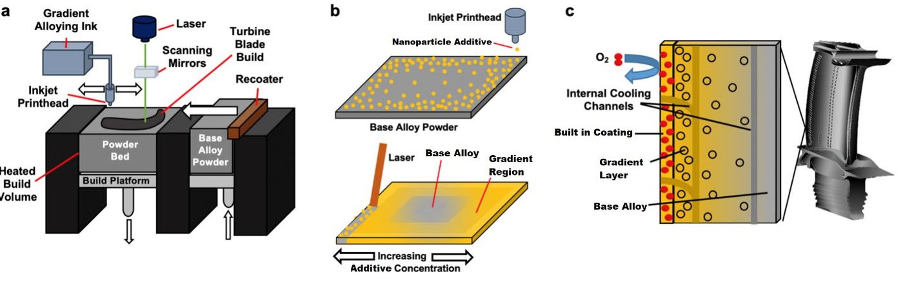
HAMR3 hybrid machine and process concept. Images: Hart group (Z. Kutschke, MIT S.M. thesis, 2023).
MIT · Mechanosynthesis GroupGraded materials by LPBF
Hybrid inkjet + laser powder bed fusion
Graded metals made by DED are limited to millimetre resolution, and powder bed fusion has so far graded composition only
layer by layer. In Prof. A. John Hart's group I am developing a hybrid process that jets nanoparticle-loaded inks onto each
powder layer before the laser melts it, so the alloy forms in situ, voxel by voxel.
Goal: smooth in-plane composition gradients at powder bed fusion resolution.
A heated build plate supports crack-prone alloys such as refractory metals for propulsion and energy.
In-situ synchrotron X-ray imaging of an IN718 melt pool on 316L under a magnetic field.
UCL · manuscript in preparationToward Project 2.2
Magnetic fields as a melt-pool actuator
A static magnetic field adds a new force inside the melt pool: thermoelectric currents at the solid–liquid boundary interact with
the field and drive flow exactly where the microstructure forms. With Prof. Peter D. Lee at University College London, I used
in-situ synchrotron X-ray imaging to watch DED of 316L stainless steel and IN718 under a magnetic field.
Direct evidence of thermoelectric magnetohydrodynamic (TEMHD) flow in DED.
Next: use the field as an extra control input for melt-pool shape, dilution and microstructure.
The same turbine-sector part built without (left) and with (right) closed-loop control.
U of T · manuscript and patent application in preparationToward Project 2.2
Deep-learning closed-loop control of DED
Open-loop DED drifts as heat builds up in the part. On the DED platform I built at the University of Toronto, a deep-learning model reads
images of the build and adjusts laser power on the fly to keep each track on target.
1st Place, ASM International IMAT Materials Venture Challenge (2025).
Funded in part by a Connaught Innovation Award (2023).
AI: learned feedback control
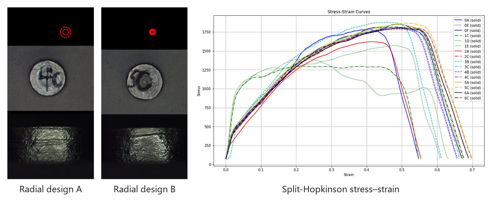
Radial bi-metallic samples after split-Hopkinson bar impact, and their dynamic stress–strain curves.
U of T · manuscript submitted
Radial bi-metals under ultra-high-speed impact
Strength and ductility usually trade off, and the trade-off is harshest under impact. Building on the confined-necking
mechanism, I designed radial bi-metallic architectures made by DED that overcome the strength–ductility trade-off under
ultra-high-speed impact.
Presented at the 155th TMS Annual Meeting (2026).
Published
Published projects
Custom multi-material directed energy deposition (DED) platform
Laboratory for Extreme Mechanics & Additive Manufacturing, University of Toronto
I led the design and construction of a full-size DED system from scratch. It has a 1 kW IPG fiber laser, two powder hoppers
for multi-material deposition, and a user-friendly control interface, and it prints 316L and 17-4PH stainless steels,
nickel superalloys and more. A CCD camera and a high-speed infrared camera monitor the melt pool in situ.
This platform produced the heterostructured bi-metallic steels and multifunctional parts below. On it we are also developing an
AI-powered closed-loop controller that reads images of the build and adjusts laser power on the fly
(unpublished; see ongoing projects).
Recognition: 1st Place, ASM International IMAT Materials Venture Challenge (2025); Connaught Innovation Award (2023).
Manuscript and US patent application in preparation.
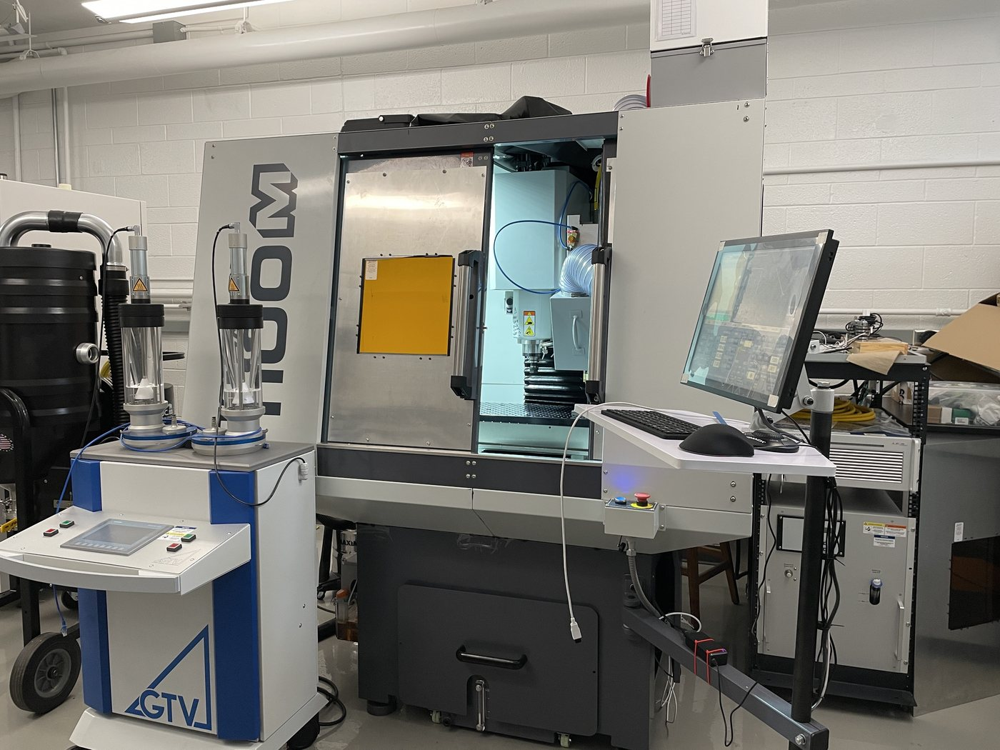
The custom multi-material DED system.
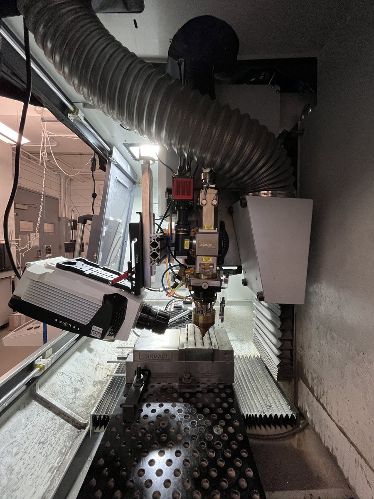
Deposition head and in-situ monitoring camera inside the build chamber.Automated printing and image capture inside the build chamber.Deposition with (left) and without (right) AI-powered closed-loop control (unpublished).
AIDED: accurate inverse process optimization for laser DED
Laboratory for Extreme Mechanics & Additive Manufacturing, University of Toronto
Finding good process parameters for DED, and for additive manufacturing in general, is slow and expensive, yet it decides
build quality, cost and material waste. AIDED uses machine learning to predict melt-pool and track geometry from process
parameters, and a genetic algorithm to search inversely for the parameters that give a target geometry, from single tracks
to multi-track layers and multi-layer builds. It finds optimal parameters for given objectives within 1–3 h, and
transferred from 316L to pure Ni with one-fifth of the data.
AIDED framework overview.
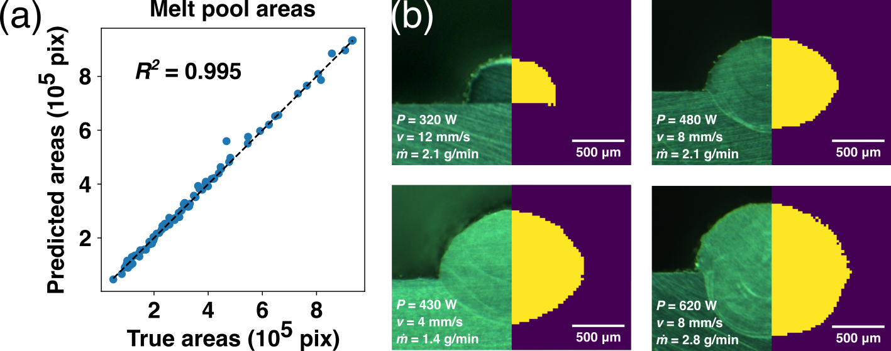
Predicting single-track melt-pool cross-sections.
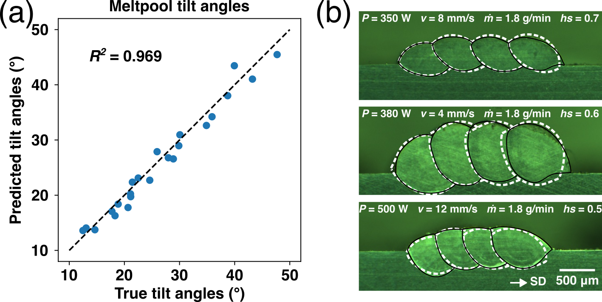
Predicting multi-track cross-sections.
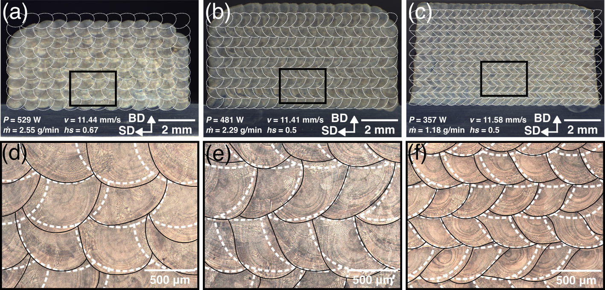
Predicting multi-layer builds.
Shang, X., Talbot, A., Li, E., Wen, H., Lyu, T., Zhang, J., & Zou, Y. (2025). Accurate inverse process optimization framework in laser directed energy deposition.
Additive Manufacturing, 102, 104736.
Code
Confined necking and improved tensile ductility in heterostructured bi-metallic steels
Laboratory for Extreme Mechanics & Additive Manufacturing, University of Toronto
Using DED, we made a new type of mesoscale heterostructured material: bi-metallic steels that combine 316L and 17-4PH stainless
steels, which have very different strength and ductility. By tuning the ratio and arrangement of the two steels, we improved
tensile ductility, ultimate tensile strength and yield strength over 316L by 27.3%, 11.5% and 1.8%, respectively. The gains come from
(i) confined-necking co-deformation, where 316L confines and delays the necking of 17-4PH and gives the whole sample more work hardening;
(ii) a switch between necking-induced and shear-induced failure; and (iii) hetero-deformation-induced (HDI) hardening.
Deformation mechanisms in mesoscale heterostructured steels made by DED.
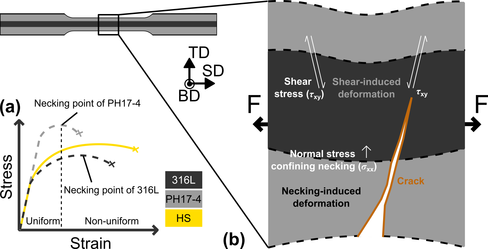
The confined-necking co-deformation mechanism.
Shang, X., Dash, S. S., Shao, C., Lang, L., … & Zou, Y. (2026). Confined necking and improved tensile ductility in heterostructured bi-metallic steels made by additive manufacturing.
Acta Materialia, 121952.
Additive manufacturing of multi-metallic materials for multifunctionality
Laboratory for Extreme Mechanics & Additive Manufacturing, University of Toronto
Multifunctional materials perform several useful functions without complex joints. Metallic ones are attractive for their strength
and durability but hard to design and make, because several metals must be integrated during manufacturing. DED can deposit
different alloys exactly where they are needed. With carefully programmed toolpaths, we demonstrated four multifunctional metal parts:
(i) tunable magnetic lifting force, (ii) information embedded securely and durably as a material fingerprint, (iii) improved
ferrofluidic seals, and (iv) programmable mechanical properties. Two US patent applications arose from this work.
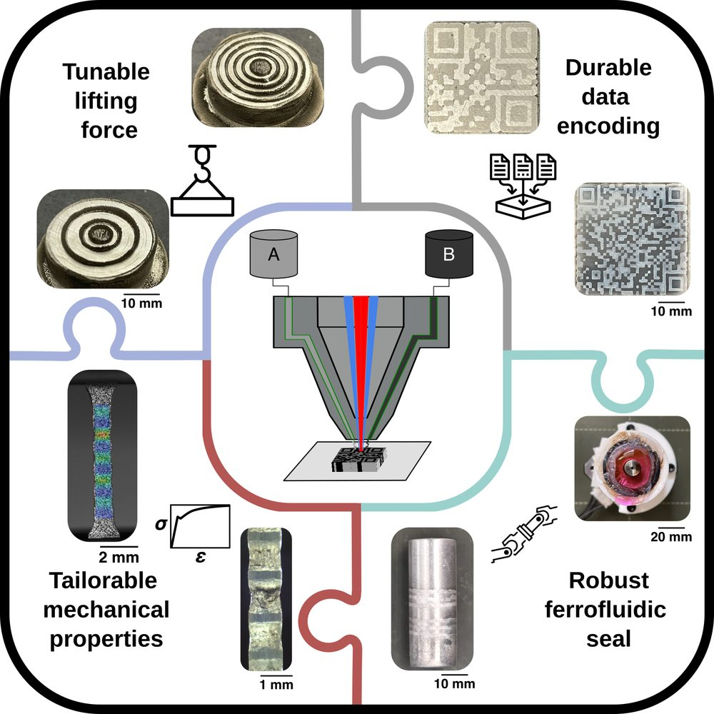
Four multifunctional multi-metal parts made by DED.Reading a QR code embedded inside a metal part made by DED.
Shang, X., Li, E., Dash, S. S., Talbot, A., & Zou, Y. (2026). Additive manufacturing of multi-metallic materials to achieve multi-functionality.
MetalMat, 3(1), e70032.
Tailoring the mechanical properties of 3D microstructures
Laboratory for Extreme Mechanics & Additive Manufacturing, University of Toronto
Designing a material for a specific application requires capturing complex process–structure–property relationships.
Finding microstructures inversely from target mechanical properties is especially hard because the design space is so large.
We built an end-to-end framework that handles both forward prediction and inverse search: a 3D convolutional neural network
predicts stress–strain response from a 3D microstructure, and a genetic algorithm searches for microstructures that meet
target properties, cutting the time from target properties to a candidate microstructure.
The deep learning + genetic algorithm framework.
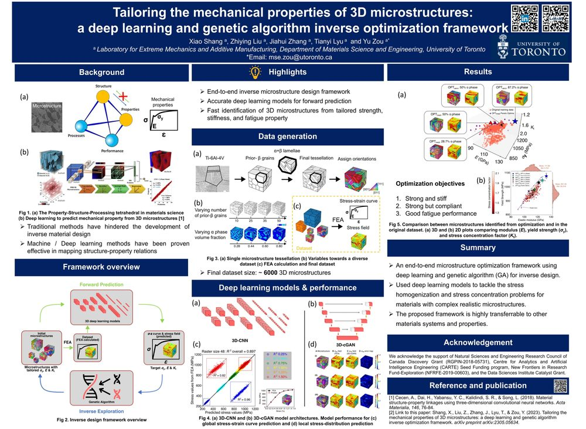
This poster won a Digital Discovery Poster Prize at Accelerate 2023.
Shang, X., Liu, Z., Zhang, J., Lyu, T., & Zou, Y. (2023). Tailoring the mechanical properties of 3D microstructures: A deep learning and genetic algorithm inverse optimization framework.
Materials Today, 70, 71–81.
Code
Mechanism and quantification of melt-pool morphology in laser DED
Laboratory for Extreme Mechanics & Additive Manufacturing, University of Toronto
Melt-pool shape sets track geometry, dilution and defects in DED. Combining computational fluid dynamics with in-situ
high-speed infrared imaging, we explained how the melt pool evolves during single-track deposition
and quantified its morphology, the kind of process model that feeds the design and control work in my research plan.
Melt-pool cross-sections from laser DED.
Zhang, J.*, Shang, X.*, … & Zou, Y. (2025). Mechanism and quantification of melt pool morphology evolution in single-track fabrication by laser directed energy deposition.
Journal of Manufacturing Processes, 156, 556–568. *Co-first authors.
Bistable auxetic metamaterials (BAMs) are perforated periodic structures with a negative Poisson's ratio. Under tension, a BAM expands
to a second stable state through a large shape change, which normally relies on a soft elastomer; made from a rigid polymer or a metal,
its ligaments rupture. We extended the BAM architecture to rigid base materials and used experiments and simulations to assess
performance, bistability and durability over 10,000 cycles. Geometric maps show how the main architectural descriptors control behaviour,
opening BAMs to a wide range of materials, including elastic–perfectly plastic and potentially brittle ones.
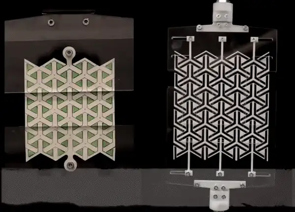
Bistable auxetics made of soft (left) and rigid (right) base materials.